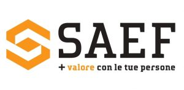
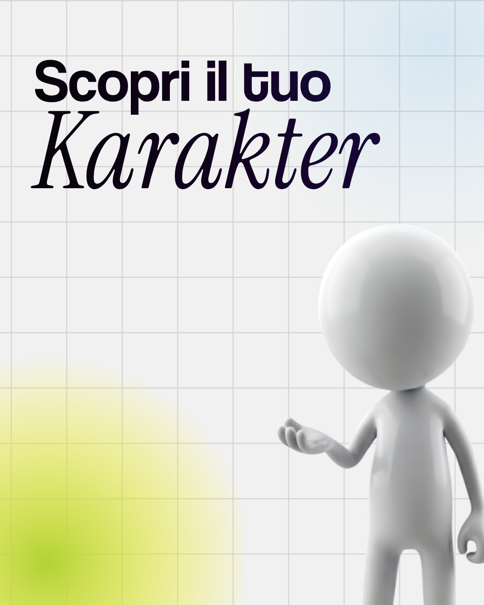

Test Reiss Motivation Profile
Scopri le tue 16 motivazioni fondamentali con restituzione individuale di un'ora.
Richiesta informazioni ›Formiamo coach professionisti certificati ICF partendo dalla scienza delle motivazioni: il Reiss Motivation Profile.
ACCREDITATA E RICONOSCIUTA · PARTNER E CERTIFICAZIONI





Il Reiss Motivation Profile misura le 16 motivazioni fondamentali che guidano ogni persona, non 4 categorie semplificate. È lo strumento scientifico che integriamo nel Master: capire cosa muove davvero te e i tuoi clienti è ciò che rende un coach efficace.
Coach professionisti formati dal 2011
Di scuola di coaching a Roma, accreditata ICF
Le motivazioni misurate dal Reiss Motivation Profile
Persone accompagnate tra percorsi, test e coaching
Si parte da una mappa. Il Test Reiss Motivation Profile fotografa le 16 motivazioni che ti muovono, quelle che spesso non sai nemmeno di avere. Da qui parte tutto.
Il coaching diventa un linguaggio. 170 ore tra teoria ICF, pratica supervisionata e laboratori. Impari ad ascoltare prima te stesso, poi gli altri.
Esci con un mestiere. Diventi coach professionista certificato ICF, con strumenti, metodo, network e soprattutto il tuo Karakter: la firma che porti in ogni sessione.
Dal primo test gratuito alla certificazione professionale: un ecosistema per capirti, formarti e crescere.
Scopri le tue 16 motivazioni fondamentali con restituzione individuale di un'ora.
Richiesta informazioni ›Diventa Coach certificato ICF Level 2. 170 ore, Reiss incluso, con pratica supervisionata.
Scopri il percorso ›Abilitati a somministrare e restituire il Reiss Motivation Profile come Reiss Profile Master.
Richiesta informazioni ›
Il format esperienziale gratuito: le competenze chiave per trasformare le tue capacità in una professione.
Dodici modi di stare al mondo. Il quiz gratuito ti restituisce i tuoi 3 Tratti dominanti in 5 minuti.
Coach professionista ICF PCC e fondatore di Karakter, Marco guida il Master K-Coach dal 2011. Ha portato in Italia l'integrazione del Reiss Motivation Profile nella formazione dei coach, convinto che una professione seria parta dalla profondità scientifica e dalla consapevolezza di sé.
in LinkedInCo-fondatrice di Karakter, Alessandra accompagna allievi e aziende nei percorsi di crescita. Formatrice e coach, porta nel Master un approccio caldo e rigoroso allo stesso tempo: ogni Karakter conta, e la formazione più vera è quella che parte dalle persone.
in LinkedIn170 ore per diventare coach certificato ICF Level 2, con il Reiss Motivation Profile integrato.
Cos'è il coaching, il codice etico e le competenze chiave ICF su cui si costruisce la professione.
Il sistema Scopri, Comprendi, Fai Crescere e la lettura del carattere attraverso i 12 Tratti.
Lo strumento scientifico che misura ciò che muove le persone, e come restituirlo in sessione.
Struttura di una sessione efficace, ascolto profondo e domande che aprono strade.
Mentoring ICF, supervisione tra pari e postura etica del coach professionista.
Ore di pratica, valutazione e accompagnamento verso la certificazione ICF.
Oltre 3.000 persone tra allievi del Master, profili Reiss e percorsi di coaching. Recensioni verificate su Google.
Il Master mi ha dato un metodo serio e la certificazione ICF. Oggi lavoro come coach a tempo pieno.
Capire le 16 motivazioni delle persone che gestisco è stato illuminante. Strumento scientifico, non slogan.
Cercavo una scuola rigorosa e umana insieme. Karakter è esattamente questo: profondità e calore.
Il profilo Reiss e la restituzione mi hanno dato una chiarezza che nessun test superficiale mi aveva dato.
Docenti presenti, pratica vera, supervisione costante. Mi sono sentita accompagnata fino alla certificazione.
Il Master mi ha dato un metodo serio e la certificazione ICF. Oggi lavoro come coach a tempo pieno.
Capire le 16 motivazioni delle persone che gestisco è stato illuminante. Strumento scientifico, non slogan.
Cercavo una scuola rigorosa e umana insieme. Karakter è esattamente questo: profondità e calore.
Il profilo Reiss e la restituzione mi hanno dato una chiarezza che nessun test superficiale mi aveva dato.
Docenti presenti, pratica vera, supervisione costante. Mi sono sentita accompagnata fino alla certificazione.
Il Master mi ha dato un metodo serio e la certificazione ICF. Oggi lavoro come coach a tempo pieno.
Capire le 16 motivazioni delle persone che gestisco è stato illuminante. Strumento scientifico, non slogan.
Cercavo una scuola rigorosa e umana insieme. Karakter è esattamente questo: profondità e calore.
Il profilo Reiss e la restituzione mi hanno dato una chiarezza che nessun test superficiale mi aveva dato.
Docenti presenti, pratica vera, supervisione costante. Mi sono sentita accompagnata fino alla certificazione.
Il Reiss Motivation Profile ha portato metodo dove prima usavo solo intuito. Ora è parte del mio lavoro.
Da psicologa cercavo rigore. Il modello Karakter e il Reiss si sono incastrati con la mia pratica.
Non un corso motivazionale, ma una vera formazione professionale. Ne è valsa ogni ora.
Sono partita dal quiz gratuito dei 12 Tratti, poi il Reiss, poi il Master. Un percorso naturale.
Ho seguito parte online e parte in sede: qualità identica, docenti sempre disponibili.
Il Reiss Motivation Profile ha portato metodo dove prima usavo solo intuito. Ora è parte del mio lavoro.
Da psicologa cercavo rigore. Il modello Karakter e il Reiss si sono incastrati con la mia pratica.
Non un corso motivazionale, ma una vera formazione professionale. Ne è valsa ogni ora.
Sono partita dal quiz gratuito dei 12 Tratti, poi il Reiss, poi il Master. Un percorso naturale.
Ho seguito parte online e parte in sede: qualità identica, docenti sempre disponibili.
Il Reiss Motivation Profile ha portato metodo dove prima usavo solo intuito. Ora è parte del mio lavoro.
Da psicologa cercavo rigore. Il modello Karakter e il Reiss si sono incastrati con la mia pratica.
Non un corso motivazionale, ma una vera formazione professionale. Ne è valsa ogni ora.
Sono partita dal quiz gratuito dei 12 Tratti, poi il Reiss, poi il Master. Un percorso naturale.
Ho seguito parte online e parte in sede: qualità identica, docenti sempre disponibili.
Cosa cambia quando smetti di improvvisare e parti da un metodo scientifico e da una certificazione riconosciuta.
Raccontaci cosa ti interessa: ti ricontattiamo con il calendario delle edizioni e tutti i dettagli.
Compila il form: ti rispondiamo entro 24-48h.
Preferisci scriverci? info@karakter.it
Compila i campi: pensiamo a tutto noi.
No. Il Master accompagna dai fondamenti fino alla certificazione: serve motivazione, non esperienza pregressa.
Sì. È accreditato ICF Level 2 (144 ore ACSTH), lo standard internazionale del coaching professionale.
È il test scientifico che misura le 16 motivazioni fondamentali della persona. Karakter è tra le poche realtà in Italia a integrarlo nel percorso.
No. Le lezioni si svolgono in presenza a Roma e online, con la stessa qualità didattica.
Il quiz "Scopri il tuo Karakter" è gratuito e ti dà i tuoi 3 Tratti dominanti. Il Reiss è il test professionale che misura le 16 motivazioni, con restituzione individuale.
Con la certificazione RMP che abilita a somministrare e restituire il Reiss Motivation Profile. Richiedi informazioni per il percorso dedicato.
Inizia dal quiz gratuito o richiedi informazioni sul Master K-Coach e sul Reiss Motivation Profile.
Roma · Viale G. Rossini · e online